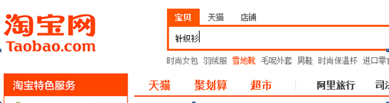
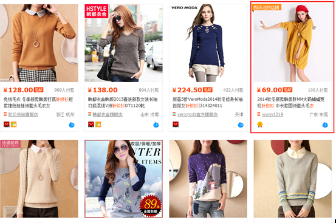
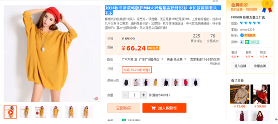
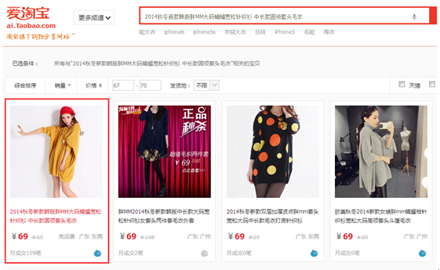
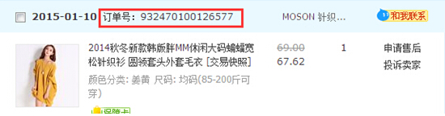
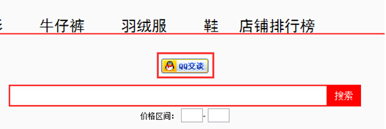

1、首先在淘宝网搜索想要买的宝贝,如下图所示。

2、选中自己看重的宝贝点击进去查看。例如本例中，想要购买红色框标记出那款，进入宝贝详情页面。

3、进入页面后复制宝贝标题。如下图中的“2014秋冬新款韩版胖MM大码蝙蝠宽松针织衫 中长款圆领套头毛衣”。

4、把复制好的标题粘贴到到本网站首页中的搜索框中去，并且在价格区间填上宝贝所在的区间，一般越小越好。例如本例子中宝贝的价格为“69”，填写的价格区间为68-70即可，如果你所购买的宝贝参加了淘宝的推广计划，那么就可以找到你想要买的宝贝，然后点击进去购买即可。(PS：并非所有的淘宝宝贝都有推广，大约有百分之八十的宝贝会有推广，并且销量越好的宝贝，通常推广的概率越高。)

5、购买后，在已购买的宝贝里查看订单编号。

6、在店铺首页点击QQ交谈，给站主留下订单编号和支付宝帐号，经站长在后台核实后通过后，通过留下的支付宝帐号，返利所购买衣服成交价格的5%的利润。

PS：目前服装统一返利5%，其他商品视具体情况而定，购买时可咨询站长。